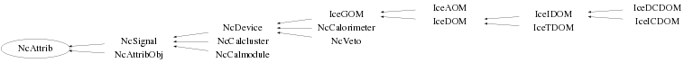

class NcAttrib
Class NcAttrib Generic handling of detector signal (calibration) attributes. Normally this class is only used as a base class to provide the various attributes to the derived class. An example of this is NcSignal. However, one can of course also use this class on its own as shown in the simple example hereafter. Example : NcAttrib a; a.SetSlotName("PMT amplitude in Volt"); a.SetGain(250.7); a.SetSlotName("Time of flight in ns",2); a.SetOffset(-22.5,2); a.SetSlotName("PMT amplitude in ADC",3); a.SetGain(1340,3); a.SetSlotName("TDC",4); a.SetOffset(10.75,"TDC"); a.SetEdgeOn(3); a.SetDead(1); a.List(); --- Author: Nick van Eijndhoven 18-sep-2003 Utrecht University - Modified: NvE $Date: 2012-07-18 16:51:01 +0200 (Wed, 18 Jul 2012) $ NCFS
Function Members (Methods)
public:
| NcAttrib() | |
| NcAttrib(const NcAttrib& a) | |
| virtual | ~NcAttrib() |
| void | AddNamedSlot(TString s) |
| static TClass* | Class() |
| void | DecreaseEdgeValue(Int_t j = 1) |
| void | DecreaseEdgeValue(TString name) |
| void | DeleteCalibrations(Int_t mode = 0) |
| TF1* | GetCalFunction(Int_t j = 1) const |
| TF1* | GetCalFunction(TString name) const |
| Int_t | GetCalWord(Int_t j = 1) const |
| Int_t | GetCalWord(TString name) const |
| Int_t | GetDeadValue(Int_t j = 1) const |
| Int_t | GetDeadValue(TString name) const |
| TF1* | GetDecalFunction(Int_t j = 1) const |
| TF1* | GetDecalFunction(TString name) const |
| Int_t | GetEdgeValue(Int_t j = 1) const |
| Int_t | GetEdgeValue(TString name) const |
| Float_t | GetGain(Int_t j = 1) const |
| Float_t | GetGain(TString name) const |
| Int_t | GetGainFlag(Int_t j = 1) const |
| Int_t | GetGainFlag(TString name) const |
| Int_t | GetLockValue(Int_t j = 1) const |
| Int_t | GetLockValue(TString name) const |
| Int_t | GetNcalflags() const |
| Int_t | GetNcalfuncs() const |
| Int_t | GetNdecalfuncs() const |
| Int_t | GetNgains() const |
| Int_t | GetNnames() const |
| Int_t | GetNoffsets() const |
| virtual Int_t | GetNslots() const |
| Float_t | GetOffset(Int_t j = 1) const |
| Float_t | GetOffset(TString name) const |
| Int_t | GetOffsetFlag(Int_t j = 1) const |
| Int_t | GetOffsetFlag(TString name) const |
| Int_t | GetSlotIndex(TString name, Int_t opt = 0) const |
| TString | GetSlotName(Int_t j = 1) const |
| void | IncreaseEdgeValue(Int_t j = 1) |
| void | IncreaseEdgeValue(TString name) |
| virtual TClass* | IsA() const |
| virtual void | List(Int_t j = 0) const |
| virtual void | List(TString name) const |
| virtual void | Load(NcAttrib& a, Int_t j = 0) |
| virtual void | Load(NcAttrib& a, TString name) |
| void | Lock(Int_t j = 1) |
| void | Lock(TString name) |
| NcAttrib& | operator=(const NcAttrib&) |
| void | ResetGain(Int_t j = 1) |
| void | ResetGain(TString name) |
| void | ResetOffset(Int_t j = 1) |
| void | ResetOffset(TString name) |
| void | SetAlive(Int_t j = 1) |
| void | SetAlive(TString name) |
| void | SetCalFunction(TF1* f, Int_t j = 1) |
| void | SetCalFunction(TF1* f, TString name) |
| void | SetDead(Int_t j = 1) |
| void | SetDead(TString name) |
| void | SetDecalFunction(TF1* f, Int_t j = 1) |
| void | SetDecalFunction(TF1* f, TString name) |
| void | SetEdgeOff(Int_t j = 1) |
| void | SetEdgeOff(TString name) |
| void | SetEdgeOn(Int_t j = 1) |
| void | SetEdgeOn(TString name) |
| void | SetEdgeValue(Int_t val, Int_t j = 1) |
| void | SetEdgeValue(Int_t val, TString name) |
| void | SetGain(Double_t gain, Int_t j = 1) |
| void | SetGain(Double_t gain, TString name) |
| void | SetOffset(Double_t off, Int_t j = 1) |
| void | SetOffset(Double_t off, TString name) |
| void | SetSlotName(TString s, Int_t j = 1) |
| virtual void | ShowMembers(TMemberInspector&) |
| virtual void | Streamer(TBuffer&) |
| void | StreamerNVirtual(TBuffer& ClassDef_StreamerNVirtual_b) |
| void | Unlock(Int_t j = 1) |
| void | Unlock(TString name) |
protected:
| void | SetCalFlags(Int_t gf, Int_t of, Int_t j) |
Data Members
protected:
Class Charts
{kind=link}
{kind=link}
{kind=link}
{kind=link}

Function documentation
NcAttrib()
Creation of an NcAttrib object and initialisation of parameters. Several values of the same type (e.g. gain) can be stored in different slots. If needed, the storage for values will be expanded automatically when entering values.
void SetGain(Double_t gain, Int_t j = 1)
Store gain value of the j-th (default j=1) attribute slot. Note : The first attribute slot is at j=1. In case the value of the index j exceeds the maximum number of reserved slots for gain values, the number of reserved slots for the gain values is increased automatically.
void SetGain(Double_t gain, TString name)
Store gain value of the name-specified attribute slot. This procedure involves a slot-index search based on the specified name at each invokation. This may become slow in case many slots have been defined and/or when this procedure is invoked many times. In such cases it is preferable to use indexed addressing in the user code either directly or via a few invokations of GetSlotIndex().
void SetOffset(Double_t off, Int_t j = 1)
Store offset value of the j-th (default j=1) attribute slot. Note : The first attribute slot is at j=1. In case the value of the index j exceeds the maximum number of reserved slots for offset values, the number of reserved slots for the offset values is increased automatically.
void SetOffset(Double_t off, TString name)
Store offset value of the name-specified attribute slot. This procedure involves a slot-index search based on the specified name at each invokation. This may become slow in case many slots have been defined and/or when this procedure is invoked many times. In such cases it is preferable to use indexed addressing in the user code either directly or via a few invokations of GetSlotIndex().
void SetCalFlags(Int_t gf, Int_t of, Int_t j)
Store calibration flags of the j-th (default j=1) attribute slot. Note : The first attribute slot is at j=1. In case the value of the index j exceeds the maximum number of reserved slots for the calib. flags, the number of reserved slots for the calib. flags is increased automatically. The value stored is : 10000*edge +1000*lock + 100*dead + 10*gainflag + offsetflag.
Int_t GetGainFlag(Int_t j = 1) const
Provide gain flag of the j-th (default j=1) attribute slot.
flag = 1 : Gain was set
0 : Gain was not set
Note : The first attribute slot is at j=1.
In case j is invalid, 0 is returned.
Int_t GetGainFlag(TString name) const
Provide gain flag of the name-specified attribute slot.
flag = 1 : Gain was set
0 : Gain was not set
This procedure involves a slot-index search based on the specified name
at each invokation. This may become slow in case many slots have been
defined and/or when this procedure is invoked many times.
In such cases it is preferable to use indexed addressing in the user code
either directly or via a few invokations of GetSlotIndex().
Int_t GetOffsetFlag(Int_t j = 1) const
Provide offset flag of the j-th (default j=1) attribute slot.
flag = 1 : Offset was set
0 : Offset was not set
Note : The first attribute slot is at j=1.
In case j is invalid, 0 is returned.
Int_t GetOffsetFlag(TString name) const
Provide ofset flag of the name-specified attribute slot.
flag = 1 : Offset was set
0 : Offset was not set
This procedure involves a slot-index search based on the specified name
at each invokation. This may become slow in case many slots have been
defined and/or when this procedure is invoked many times.
In such cases it is preferable to use indexed addressing in the user code
either directly or via a few invokations of GetSlotIndex().
Int_t GetCalWord(Int_t j = 1) const
Provide calib. word of the j-th (default j=1) attribute slot. The word value stored is : 10000*edge + 1000*lock + 100*dead + 10*gainflag + offsetflag. Note : The first attribute slot is at j=1. In case j is invalid, 0 is returned.
Int_t GetCalWord(TString name) const
Provide calib. word of the name-specified attribute slot. The word value stored is : 10000*edge + 1000*lock + 100*dead + 10*gainflag + offsetflag. This procedure involves a slot-index search based on the specified name at each invokation. This may become slow in case many slots have been defined and/or when this procedure is invoked many times. In such cases it is preferable to use indexed addressing in the user code either directly or via a few invokations of GetSlotIndex().
Float_t GetGain(Int_t j = 1) const
Provide gain value of the j-th (default j=1) attribute slot. The first attribute slot is at j=1. In case no gain value was set or the argument j is invalid, 0 is returned. Note : Use GetGainFlag(j) to check whether this gain was set or not.
Float_t GetGain(TString name) const
Provide gain value of the name-specified attribute slot. This procedure involves a slot-index search based on the specified name at each invokation. This may become slow in case many slots have been defined and/or when this procedure is invoked many times. In such cases it is preferable to use indexed addressing in the user code either directly or via a few invokations of GetSlotIndex().
Float_t GetOffset(Int_t j = 1) const
Provide offset value of the j-th (default j=1) attribute slot. The first attribute slot at j=1. In case no offset value was set or the argument j is invalid, 0 is returned. Note : Use GetOffsetFlag(j) to check whether this offset was set or not.
Float_t GetOffset(TString name) const
Provide offset value of the name-specified attribute slot. This procedure involves a slot-index search based on the specified name at each invokation. This may become slow in case many slots have been defined and/or when this procedure is invoked many times. In such cases it is preferable to use indexed addressing in the user code either directly or via a few invokations of GetSlotIndex().
void ResetGain(Int_t j = 1)
Reset the gain value of the j-th (default j=1) attribute slot.
Notes : The first attribute slot is at j=1.
j=0 ==> All gain values will be reset.
void ResetGain(TString name)
Reset the gain value of the name-specified attribute slot. This procedure involves a slot-index search based on the specified name at each invokation. This may become slow in case many slots have been defined and/or when this procedure is invoked many times. In such cases it is preferable to use indexed addressing in the user code either directly or via a few invokations of GetSlotIndex().
void ResetOffset(Int_t j = 1)
Reset the offset value of the j-th (default j=1) attribute slot.
Notes : The first attribute slot is at j=1.
j=0 ==> All offset values will be reset.
void ResetOffset(TString name)
Reset the offset value of the name-specified attribute slot. This procedure involves a slot-index search based on the specified name at each invokation. This may become slow in case many slots have been defined and/or when this procedure is invoked many times. In such cases it is preferable to use indexed addressing in the user code either directly or via a few invokations of GetSlotIndex().
void DeleteCalibrations(Int_t mode = 0)
User selected delete of all gains and/or offsets.
mode = 0 : All attributes (names,gains,offsets,(de)calfuncs, edge and dead values) are deleted.
1 : Only the gains are deleted.
2 : Only the offsets are deleted.
3 : Gains, offsets and (de)calfuncs are deleted, but names, edge and dead values are kept.
4 : Only the calib. functions are deleted.
5 : Only the de-calib. functions are deleted.
6 : Only the calib. and de-calib. functions are deleted.
The default when invoking DeleteCalibrations() corresponds to mode=0.
void SetDead(Int_t j = 1)
Set the dead flag to 1 for the j-th (default j=1) attribute slot. Note : The first attribute slot is at j=1. In case the value of the index j exceeds the maximum number of reserved slots for the flags, the number of reserved slots for the flags is increased automatically. The value stored is : 10000*edge + 1000*lock + 100*dead + 10*gainflag + offsetflag.
void SetDead(TString name)
Set the dead flag to 1 for the name-specified attribute slot. This procedure involves a slot-index search based on the specified name at each invokation. This may become slow in case many slots have been defined and/or when this procedure is invoked many times. In such cases it is preferable to use indexed addressing in the user code either directly or via a few invokations of GetSlotIndex().
void SetAlive(Int_t j = 1)
Set the dead flag to 0 for the j-th (default j=1) attribute slot. Note : The first attribute slot is at j=1. In case the value of the index j exceeds the maximum number of reserved slots for the flags, no action is taken since by default the dead flag is 0. The value stored is : 10000*edge + 1000*lock + 100*dead + 10*gainflag + offsetflag.
void SetAlive(TString name)
Set the dead flag to 0 for the name-specified attribute slot. This procedure involves a slot-index search based on the specified name at each invokation. This may become slow in case many slots have been defined and/or when this procedure is invoked many times. In such cases it is preferable to use indexed addressing in the user code either directly or via a few invokations of GetSlotIndex().
void Lock(Int_t j = 1)
Set the lock flag to 1 for the j-th (default j=1) attribute slot. Note : The first attribute slot is at j=1. In case the value of the index j exceeds the maximum number of reserved slots for the flags, the number of reserved slots for the flags is increased automatically. The value stored is : 10000*edge + 1000*lock + 100*dead + 10*gainflag + offsetflag.
void Lock(TString name)
Set the lock flag to 1 for the name-specified attribute slot. This procedure involves a slot-index search based on the specified name at each invokation. This may become slow in case many slots have been defined and/or when this procedure is invoked many times. In such cases it is preferable to use indexed addressing in the user code either directly or via a few invokations of GetSlotIndex().
void Unlock(Int_t j = 1)
Set the lock flag to 0 for the j-th (default j=1) attribute slot. Note : The first attribute slot is at j=1. In case the value of the index j exceeds the maximum number of reserved slots for the flags, no action is taken since by default the dead flag is 0. The value stored is : 10000*edge + 1000*lock + 100*dead + 10*gainflag + offsetflag.
void Unlock(TString name)
Set the lock flag to 0 for the name-specified attribute slot. This procedure involves a slot-index search based on the specified name at each invokation. This may become slow in case many slots have been defined and/or when this procedure is invoked many times. In such cases it is preferable to use indexed addressing in the user code either directly or via a few invokations of GetSlotIndex().
void SetEdgeOn(Int_t j = 1)
Set the edge value to 1 for the j-th (default j=1) attribute slot. Note : The first attribute slot is at j=1. In case the value of the index j exceeds the maximum number of reserved slots for the flags, the number of reserved slots for the flags is increased automatically. The value stored is : 10000*edge + 1000*lock + 100*dead + 10*gainflag + offsetflag.
void SetEdgeOn(TString name)
Set the edge value to 1 for the name-specified attribute slot. This procedure involves a slot-index search based on the specified name at each invokation. This may become slow in case many slots have been defined and/or when this procedure is invoked many times. In such cases it is preferable to use indexed addressing in the user code either directly or via a few invokations of GetSlotIndex().
void SetEdgeOff(Int_t j = 1)
Set the edge value to 0 for the j-th (default j=1) attribute slot. Note : The first attribute slot is at j=1. In case the value of the index j exceeds the maximum number of reserved slots for the flags, no action is taken since by default the edge flag is 0. The value stored is : 10000*edge + 1000*lock + 100*dead + 10*gainflag + offsetflag.
void SetEdgeOff(TString name)
Set the edge value to 0 for the name-specified attribute slot. This procedure involves a slot-index search based on the specified name at each invokation. This may become slow in case many slots have been defined and/or when this procedure is invoked many times. In such cases it is preferable to use indexed addressing in the user code either directly or via a few invokations of GetSlotIndex().
void SetEdgeValue(Int_t val, Int_t j = 1)
Set the edge value to "val" for the j-th (default j=1) attribute slot.
Note : The first attribute slot is at j=1.
In case the value of the index j exceeds the maximum number of reserved
slots for the flags, the number of reserved slots for the flags
is increased automatically.
The value stored is : 10000*edge + 1000*lock + 100*dead + 10*gainflag + offsetflag.
void SetEdgeValue(Int_t val, TString name)
Set the edge value to "val" for the name-specified attribute slot. This procedure involves a slot-index search based on the specified name at each invokation. This may become slow in case many slots have been defined and/or when this procedure is invoked many times. In such cases it is preferable to use indexed addressing in the user code either directly or via a few invokations of GetSlotIndex().
void IncreaseEdgeValue(Int_t j = 1)
Increase the edge value by 1 for the j-th (default j=1) attribute slot. Note : The first attribute slot is at j=1. In case the value of the index j exceeds the maximum number of reserved slots for the flags, the number of reserved slots for the flags is increased automatically. The value stored is : 10000*edge + 1000*lock + 100*dead + 10*gainflag + offsetflag.
void IncreaseEdgeValue(TString name)
Increase the edge value by 1 for the name-specified attribute slot. This procedure involves a slot-index search based on the specified name at each invokation. This may become slow in case many slots have been defined and/or when this procedure is invoked many times. In such cases it is preferable to use indexed addressing in the user code either directly or via a few invokations of GetSlotIndex().
void DecreaseEdgeValue(Int_t j = 1)
Decrease the edge value by 1 for the j-th (default j=1) attribute slot. Note : The first attribute slot is at j=1. In case the value of the index j exceeds the maximum number of reserved slots for the flags, the number of reserved slots for the flags is increased automatically. The value stored is : 10000*edge + 1000*lock + 100*dead + 10*gainflag + offsetflag.
void DecreaseEdgeValue(TString name)
Decrease the edge value by 1 for the name-specified attribute slot. This procedure involves a slot-index search based on the specified name at each invokation. This may become slow in case many slots have been defined and/or when this procedure is invoked many times. In such cases it is preferable to use indexed addressing in the user code either directly or via a few invokations of GetSlotIndex().
Int_t GetEdgeValue(Int_t j = 1) const
Provide edge value of the j-th (default j=1) attribute slot. Note : The first attribute slot is at j=1. In case j is invalid, 0 is returned.
Int_t GetEdgeValue(TString name) const
Provide edge value of the name-specified attribute slot. This procedure involves a slot-index search based on the specified name at each invokation. This may become slow in case many slots have been defined and/or when this procedure is invoked many times. In such cases it is preferable to use indexed addressing in the user code either directly or via a few invokations of GetSlotIndex().
Int_t GetDeadValue(Int_t j = 1) const
Provide dead value of the j-th (default j=1) attribute slot. Note : The first attribute slot is at j=1. In case j is invalid, 0 is returned.
Int_t GetDeadValue(TString name) const
Provide dead value of the name-specified attribute slot. This procedure involves a slot-index search based on the specified name at each invokation. This may become slow in case many slots have been defined and/or when this procedure is invoked many times. In such cases it is preferable to use indexed addressing in the user code either directly or via a few invokations of GetSlotIndex().
Int_t GetLockValue(Int_t j = 1) const
Provide lock value of the j-th (default j=1) attribute slot. Note : The first attribute slot is at j=1. In case j is invalid, 0 is returned.
Int_t GetLockValue(TString name) const
Provide lock value of the name-specified attribute slot. This procedure involves a slot-index search based on the specified name at each invokation. This may become slow in case many slots have been defined and/or when this procedure is invoked many times. In such cases it is preferable to use indexed addressing in the user code either directly or via a few invokations of GetSlotIndex().
void AddNamedSlot(TString s)
Add a new slot with the specified name. In case a slot with the specified name already exists, no action is taken.
void SetSlotName(TString s, Int_t j = 1)
Set a user defined name for the j-th (default j=1) slot. Note : The first attribute slot is at j=1. In case the value of the index j exceeds the maximum number of reserved slots for the names, the number of reserved slots for the names is increased automatically to the corresponding value.
TString GetSlotName(Int_t j = 1) const
Provide the user defined name for the j-th (default j=1) slot. Note : The first attribute slot is at j=1.
Int_t GetSlotIndex(TString name, Int_t opt = 0) const
Provide the slot index for the matching name.
opt = 0 --> The specified name has to match exactly the slotname
1 --> The specified name string has to be contained in the slotname
The default is opt=0.
If no matching name is found, 0 is returned.
Note : The first attribute slot is at j=1.
void List(Int_t j = 0) const
Provide attribute information for the j-th slot. The first slot is at j=1. In case j=0 (default) the data of all slots will be listed.
void List(TString name) const
Provide attribute information for the name-specified slot. This procedure involves a slot-index search based on the specified name at each invokation. This may become slow in case many slots have been defined and/or when this procedure is invoked many times. In such cases it is preferable to use indexed addressing in the user code either directly or via a few invokations of GetSlotIndex().
void Load(NcAttrib& a, TString name)
Load attributes of the name-specified slot of the input NcAttrib into this NcAttrib object. This procedure involves a slot-index search based on the specified name at each invokation. This may become slow in case many slots have been defined and/or when this procedure is invoked many times. In such cases it is preferable to use indexed addressing in the user code either directly or via a few invokations of GetSlotIndex().
Int_t GetNdecalfuncs() const
Provide the number of specified de-calib. functions for this attribute.
TF1* GetCalFunction(Int_t j = 1) const
Provide pointer to the calib. function of the j-th (default j=1) slot. Note : The first attribute slot is at j=1.
TF1* GetCalFunction(TString name) const
Provide pointer to the calib. function of the name-specified slot. In case no match is found, zero is returned.
void SetCalFunction(TF1* f, Int_t j = 1)
Set the calib. function of the j-th (default j=1) slot. Note : The first attribute slot is at j=1. In case the value of the index j exceeds the maximum number of reserved positions for the functions, the number of reserved positions for the functions is increased automatically. In case the function pointer argument has the same value as the current function pointer value, no action is taken since the user has already modified the actual function. In case the function pointer argument is zero, the current function is deleted and the pointer set to zero. In all other cases the current function is deleted and a new copy of the input function is created which becomes the current function.
void SetCalFunction(TF1* f, TString name)
Set the calib. function of the name-specified slot. In case the function pointer argument has the same value as the current function pointer value, no action is taken since the user has already modified the actual function. In case the function pointer argument is zero, the current function is deleted and the pointer set to zero. In all other cases the current function is deleted and a new copy of the input function is created which becomes the current function.
TF1* GetDecalFunction(Int_t j = 1) const
Provide pointer to the de-calib. function of the j-th (default j=1) slot. Note : The first attribute slot is at j=1.
TF1* GetDecalFunction(TString name) const
Provide pointer to the de-calib. function of the name-specified slot. In case no match is found, zero is returned.
void SetDecalFunction(TF1* f, Int_t j = 1)
Set the de-calib. function of the j-th (default j=1) slot. Note : The first attribute slot is at j=1. In case the value of the index j exceeds the maximum number of reserved positions for the functions, the number of reserved positions for the functions is increased automatically. In case the function pointer argument has the same value as the current function pointer value, no action is taken since the user has already modified the actual function. In case the function pointer argument is zero, the current function is deleted and the pointer set to zero. In all other cases the current function is deleted and a new copy of the input function is created which becomes the current function.
void SetDecalFunction(TF1* f, TString name)
Set the de-calib. function of the name-specified slot. In case the function pointer argument has the same value as the current function pointer value, no action is taken since the user has already modified the actual function. In case the function pointer argument is zero, the current function is deleted and the pointer set to zero. In all other cases the current function is deleted and a new copy of the input function is created which becomes the current function.